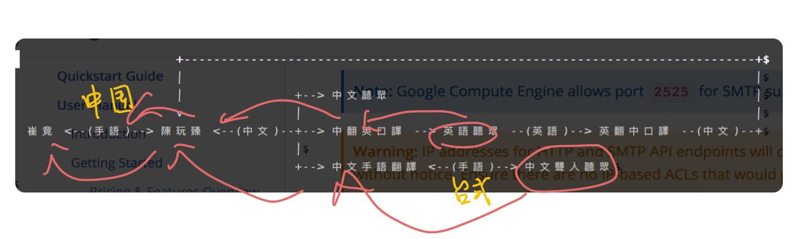

Ideas behind g0v
I’m here to talk about g0v, but no to represent g0v, because:
- nobody represents g0v
- ask not why nobody is doing something, because you are that nobody
- everyone can represent her own view of g0v
What actually happend?
- I was invited to give this talk (“dug a hole for me.”)
- I accepted (I "jumped into the hole" and became the "owner of the hole.")
- I started collaboration by announcing my project and ask around for helps.
- I get down to work and finish the talk.
Actually, it did not go as smoothly as it seems.
But what exactly do you do/make?
Numbers by the year
- 2014: 2 days, 28 sessions, 45 speakers
- 2016: 2 days, 47 sessions, 50 speakers
- 2018: 3 days, 62 sessions, 91 speakers
Some observations
Our slogans:
- 2014: “Write a program, change the society.”
- 2016: “Tear down the government, rebuild it in place.”
- 2018: “It’s open. What then?”
Shifting our focus
Personally, I think the focus has shifted from
- …“how to get started / showing what we have got so far” in 2014
- …to “let’s discuss how we work with others” in 2016
- … to “why didn’t it work / what are the lessons learned” in 2018
I think the programming committee and task force this year has tried to build an agenda that is:
- Honest: we have more sessions this year talking about “what doesn’t work and why”, “who’s been left out”, about if the project made actual impact (often no).
- Critical: we have sessions about working conditions, gender, political conditions, etc. We find speakers who are willing to ask are things actually changed? Is it temporary or is it a more permanent change?
I think the programming committee and task force this year has tried to build an agenda that is:
- Community-centered: we reserved the main conference room for community projects, and added a Bird-of-a-Feature gathering besides the existing Unconference.
Language barrier
- English-Mandarin interpreters and collaboration notes since 2014.
- Two sets of interpreters for deaf people. 
- We tried to be as inclusive as we could within our limits.
- Bootstrapping and funding: these things are crucial but it is hard to build the right team with the right people.
Working conditions
- These are the joint work of all our staffs, all volunteers.
- It has been putting too much stress on many of them. We need to make it easier for them.
See it for yourself
Join us:
- Invite yourself to our ~4000 people Slack (with a
#general-kr channel for Korean speakers): https://join.g0v.tw/
- If you are traveling to Taiwan, come to our bi-monthly hackathon at Taipei. The next one will be at December 8, 2018.